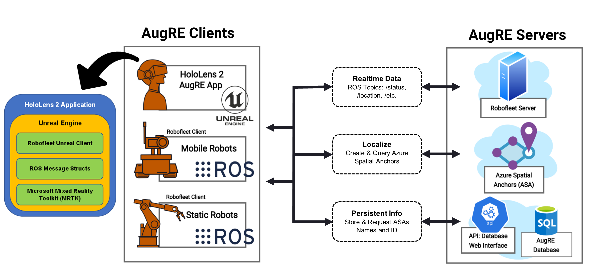

AugRE: Augmented Robot Environment
About
My team and I in the
Nuclear and Applied Robotics Group
created an augmented reality base human-robot teaming system
called AugRE. The application enables users to supervise and command
robotic teammates. AugRE allows for HoloLens 2 users to localize with
a team of heterogenous robotics. Users are able to visualize the location of both
robot and HoloLens' users in the physical world with virtual AR labels that track all agents throughout space. The framework
allows for operators of the robotic team to receive various types of ROS messages that
can be interperted and displayed in the users view. This project was built as a baseline
for further research and development.
This work has recently been accepted for publication
in the 31st IEEE International Conference on Robot & Human Interactive
Communication conference (Ro-MAN 2022).
Details

The AugRE framework is composed of many components. The main component and the largest contribution of the
project is the development of the HoloLens 2 application. The augmented reality application was built using
Unreal Engine 4 and consisted of three main components: 1) an Unreal Engine plugin called RobofleetUnrealClient,
2) a library of ROS message structs that can be interperted by Unreal Engine, 3) the Microsoft Mixed Reality Toolkit.
Robofleet Unreal Client is a modified
Robofleet Client used to communicate seamlessly with large teams of
robotic agents and other HoloLens users. Robofleet is a communication method developed recently for a scalable lightweight method of
communicating with a large team of heterogenous team of robotic agents.
From the image above, you can see that the HoloLens 2 users have the AugRE application downloaded to them. All the
robotic agents in the AugRE team have a standard Robofleet Client installed on their system as well. With all the necessary
software installed, all agents search for Azure spatial anchors, publish, and subscribe constantly to basic location and
status messages across a Robofleet server for all agents to visualize and localize to each other.
Demos
Future Work
AugRE was built as the groundwork for much more research to come. Future work will include
enhanced localizations with loop closures. It will also include better predictions from the
robot for what the human will do next.
Publications & Presentations
- Regal, F, Petlowany, C, Pehlivanturk, C, Van Sice, C., Suarez, C., Anderson, R., and Pryor, M.,
"AugRE:Augmented Robot Environment to Facilitate Human-Robot Teaming and Communication", 31st IEEE Annual
Conference on Robot and Human Interactive Communication (RO-MAN), Naples, Italy, August 2022.
- Regal, F and Petlowany, C, “AugRE: Augmented Robot Environment", Sandia National Laboratory 4th
Annual XR Conference, Virtual, July 2022.
- Regal, F and Petlowany, C, (Poster Presentation) “AugRE: An Augmented Reality Tool for Supervising,
Coordinating, and Commanding Robotic Agents", Texas Regional Robotics Symposium (TEROS), Austin,
TX, April 2022
- Regal, F and Petlowany, C, “An Augmented Reality Tool for Supervising, Coordinating, and
Commanding Robotic Agents", Texas Immersive Institute (TXI) Research Lightning Talk, Austin, TX,
February 2022.